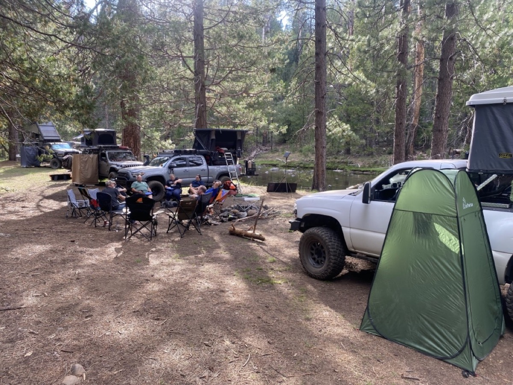

📢 Trip Update — Frazer Flat is One Week Out!
Fri Sept 11 through Sun Sept 13: Logistics email is coming separately to everyone who's signed up, but the short version: meet 7:00 AM Friday at the McDonald's on Santa Rita Rd & Hwy 580 E, convoy up to the river.
We're at 13 rigs and it's a great crew. If you're on the waitlist, keep an eye out — the advance crew heads up Thursday to confirm we've got room.
Join us for a relaxing weekend basecamp at Frazer Flat along the scenic South Fork Stanislaus River! Tucked into the lush pine forest of Stanislaus National Forest near Twain Harte and Long Barn, this trip is designed as a chill riverfront getaway. Enjoy riverside relaxing, swimming, fishing (optional—bring your fishing gear & license!), campfires, forest exploration, and good times with the Overland EastBay community.
📍 Information
- Trip Status: Confirmed (13 Rigs — Waitlist Open)
- Trip Limit: 13 rigs / participants (Waitlist active when full)
- Friday Convoy Lead: Volunteer Needed (Reach out if you can lead the Friday group!)
- Location: Frazer Flat, Stanislaus National Forest, CA
🏕️ Early Advance Deployment — Thursday, Sept 10
Some of us will be going a day early (Thursday, Sept 10 at 10:00 AM) to secure our group camp spot along the river. Reach out or RSVP if you'd like to join the advance crew!
View Early Scout Trip & RSVP →

Dates
September 11 – September 13, 2026
📢 Capacity & Waitlist Update: An advance crew will be heading out a day early (Thursday, September 10) to secure enough campsite space to accommodate the waitlist as well! The 13-rig cap is currently in place as a baseline until we are on location and confirm available space. Please watch this space and our Google distribution list for last-minute news and announcements.
Meet-up Location
📢 Call for Help — Friday Convoy Lead Needed: Since some of us are heading up a day early (Thursday) to secure our group camp spot, we need someone to lead the Friday morning crew from the Pleasanton meetup point to Frazer Flat! If you're up for leading the convoy Friday morning, please reach out to us!
Date: Friday, September 11, 2026
Time: 7:00 AM
Location: McDonald's at Santa Rita and Highway 580 E. (Standard Deployment Point)
37°42'02.9"N 121°52'10.7"W
37.700795, -121.869642
Camp Location
Location: Frazer Flat Basecamp (South Fork Stanislaus River), Stanislaus National Forest (Mi-Wok Ranger District), CA
Details: Target camp spot along the riverbank in Tuolumne County near Twain Harte / Long Barn. Enjoy pine shade, river swimming, campfires, and forest exploration. Pack-it-in, pack-it-out.
38°09'25.5"N 120°07'03.9"W
38.15707, -120.11774
Fire Restrictions & Permits
Current as of September 4, 2026
Fire restrictions are in effect July 17 – December 31, 2026. Campfires (wood or charcoal) are NOT allowed at dispersed/backcountry sites along the South Fork Stanislaus River, including Frazer Flat's riverfront spots. Campfires ARE allowed inside developed campgrounds, including Fraser Flat Campground. Gas and propane stoves (and gas/lanterns) ARE allowed, but you MUST carry a valid free California Campfire Permit (get it at permit.preventwildfiresca.org) — it is required to run a stove in the Stanislaus National Forest during fire season.
Weather
Preparing for the trip, check the weather at our basecamp location:
Current Weather
Expected Trip Weather
Get Ready Before We Go
🛑 SAFETY REQUIREMENTS
Rear Amber Chase Light and HAM Radio communications are REQUIRED to travel with the group.
Why Amber Chase Lights?
Dusty trails are common – amber lights penetrate dust far better than white or red, helping prevent rear-end collisions in low visibility. Learn more about Why Chase Lights?
HAM Radio
Program to 146.460 MHz (simplex). Handhelds work great even without a license for listening.
If you don't have a ham radio yet, check out our guide to get started.
Other Essentials
- Offline navigation (download GPX – limited/no cell service)
- Off-road tires, full-size spare, recovery gear
- Plenty of water, food, camping gear, meds, emergency kit
Group Trip Agreement & Waiver
Before signing up, please review the Voluntary Acknowledgment of Risk and Group Trip Agreement. By RSVP'ing and participating in this trip, you certify that you have read, understood, and voluntarily agreed to these terms.